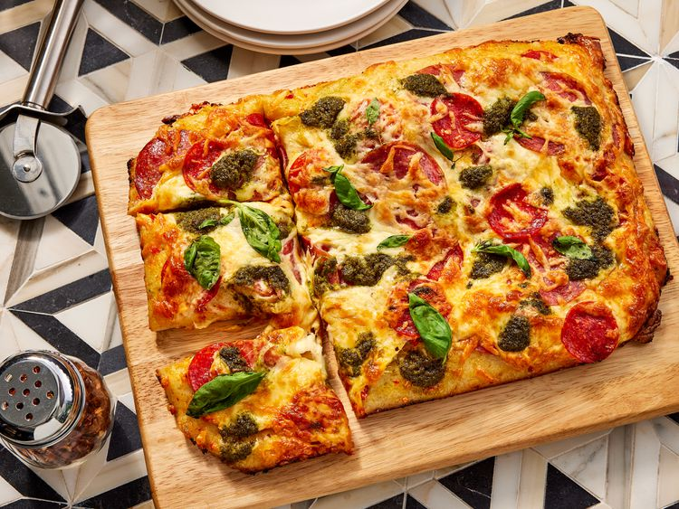

Pan Pizza

Credit: Dotdash Meredith Food Studios
Description
An homemade garlic and hot pepper pan pizza with ingredients which can all be found at Trader Joe's
Ingredients
- 1 pound fresh pizza dough, thawed
- Cooking spray
- 5 tablespoons Trader Joe’s Garlic Spread-Dip
- 1 tablespoon Trader Joe’s Italian Bomba Hot Pepper Sauce, or as needed
- 2 ounces sliced Calabrese salami, divided
- 1 1/2 ounces pepperoni, divided
- 6 ounces low-moisture part-skim mozzarella cheese, shredded, divided
- 3 tablespoons Trader Joe’s Pesto Genovese
- 1/4 cup loosely packed fresh basil leaves
Steps
- Gather all ingredients.
- Remove pizza dough from refrigerator 20 minutes before making pizza. Preheat the oven to 450°F (230°C).
- Spray a metal 9x13-inch baking pan with cooking spray. Place pizza dough in the pan and stretch to the edges. If too firm, cover with a towel and let rest for 10 minutes before stretching again.
- Spread Garlic Spread-Dip evenly over the dough. Add Bomba Hot Pepper Sauce on top and spread evenly.
- Layer half of the salami and pepperoni, then sprinkle with 3/4 cup mozzarella. Add remaining salami, pepperoni, and mozzarella.
- Dollop pesto over the pizza in small spoonfuls.
- Bake for 15–20 minutes, rotating the pan halfway through, until the crust is golden brown and the cheese is melted and bubbling.
- Remove from oven, transfer to a cutting board, sprinkle with basil leaves, slice, and serve.